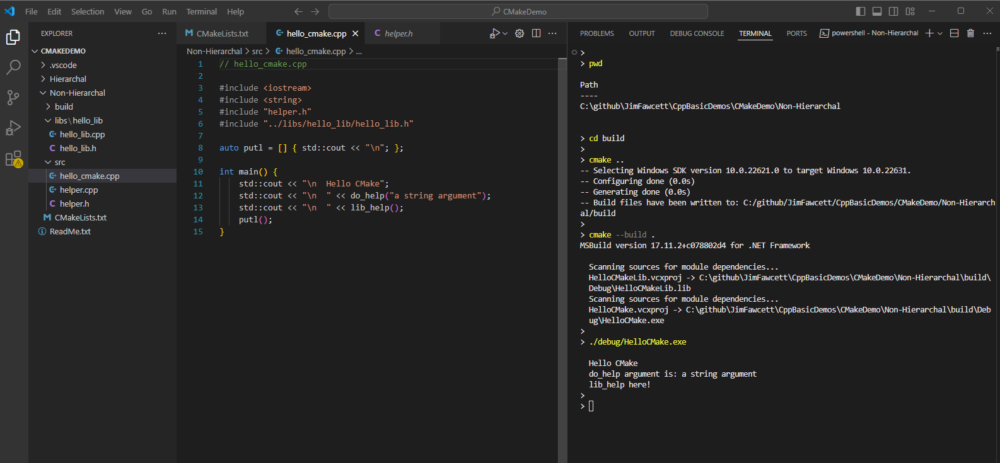

about
11/03/2024
Help: CMake
Help: CMake
building C++ projects
About
click header to toggle Site Explorer
Synopsis:
1.0 - Using CMake
-
Create a project directory which contains:
- Source directory for code - may have as many code directories as needed for clarity.
- A CMakeLists.txt file that controls the build process.
- Build directory where CMake is run. That generates a lot of temporary files That you don't want mixed in with your code.
-
Create a CMakeLists.txt file that defines:- Project name
- Files to be compiled
- Compiler options
- Binary and libraries to be generated and linked
- Open a terminal window and navigate into the build directory.
-
Build CMake configuration files with the command:
> cmake ..
-
Build a debug project with command:
> cmake --build .
-
Execute the project code with command:
> ./debug/[Project name].exe
2.0 - Sample CMakeLists.txt File
#---------------------------------------------------
# HelloCMake - Demonstrate building C++ with CMake
# - Non-hierarchal version
#---------------------------------------------------
#---------------------------------------------------
cmake_minimum_required(VERSION 3.30)
project(HelloCMake)
#---------------------------------------------------
# CMakeDemo dir
# -- CMakeLists.txt (this file)
# -- src dir
# -- hello_cmake.cpp
# -- helper.h, helper.cpp
# -- libs dir
# -- hello_lib dir
# -- hello_lib.h, hello_lib.cpp
# -- build directory
# -- Debug directory
# -- HelloCMake.exe
# -- ...
# -- HelloCMake.dir directory
# -- Debug directory
# -- hello_cmake.obj
# -- hello_lib.obj
# -- helper.obj
# -- ...
#---------------------------------------------------
set(CMAKE_CXX_STANDARD 20)
set(CMAKE_CXX_STANDARD_REQUIRED True)
#---------------------------------------------------
# build HelloCMake.obj in folder build/HelloCMake.dir/debug
#---------------------------------------------------
add_executable(HelloCMake src/hello_cmake.cpp src/helper.cpp)
#---------------------------------------------------
# build HelloCMakeLib.lib in folder build/debug
#---------------------------------------------------
add_library(HelloCMakeLib STATIC libs/hello_lib/hello_lib.cpp)
#---------------------------------------------------
# link HelloCMake.obj and HelloCMakeLib.lib to
# create HelloCMake.exe in folder build/debug
#---------------------------------------------------
target_link_libraries(HelloCMake HelloCMakeLib)
#---------------------------------------------------
# Build process with CMake version 3.30
#---------------------------------------------------
# 1. add source files to project directories src and lib
# 2. add CMakeLists.txt (this file)
# 3. mkdir build - this puts intermediate
# 4. cd build files in build directory
# 5. cmake .. - create cmake config files
# 6. cmake --build . [--config Debug | --config Release]
# 7. "./Debug/HelloCmake.exe" - runs executable
# 8. Notes:
# - you can change any of the source files then:
# cmake --build . --config Debug
# "./Debug/HelloCmake.exe
# - delete contents of build directory to clean
# cmake will regenerate
# 9. Note:
# - you can substitute Release for Debug
# in contents of 8.
#---------------------------------------------------
- defining version of CMake and Project name
- define required C++ standard
- add names and locations of code to compile into executable
- add library code to compile into static libraries
- add instruction to link library code into project executable
[ Example: CMake build and run (click image to enlarge) ].

3.0 - References
| Link | Content |
|---|---|
| CMakeDemo repository | Github repository for the code used in this example. |
| CMake Tutorial | tutorial - Entry to KitWare (maintainers of CMake) documentation. |
| Hello world with CMake | Create a CMake hello world project with CMake Quick Start and Visual Studio Code. |
| CMake-Tutorial in github repository | Consolidated scattered documentation from cmake.org |